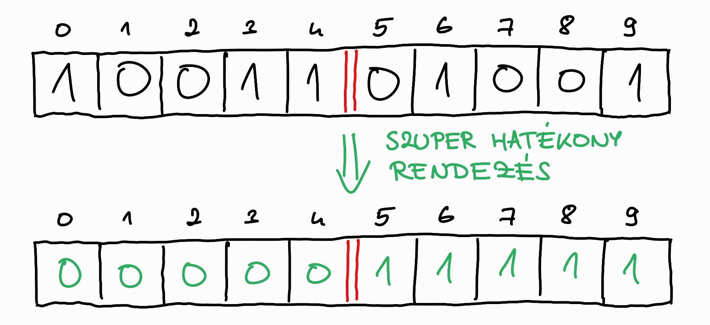
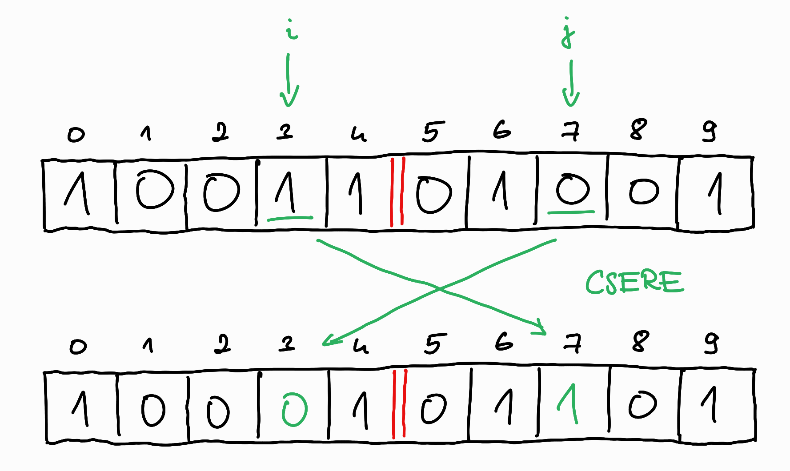
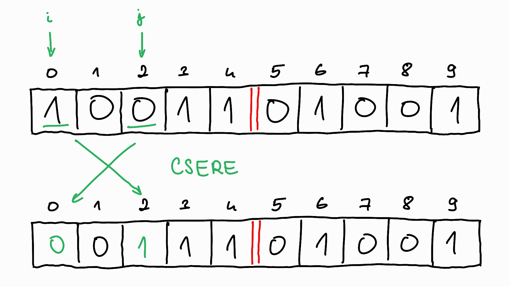
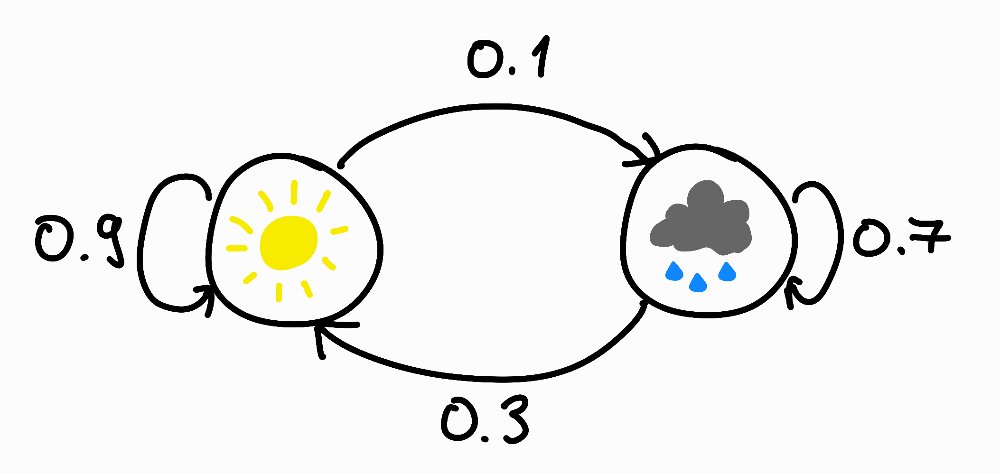
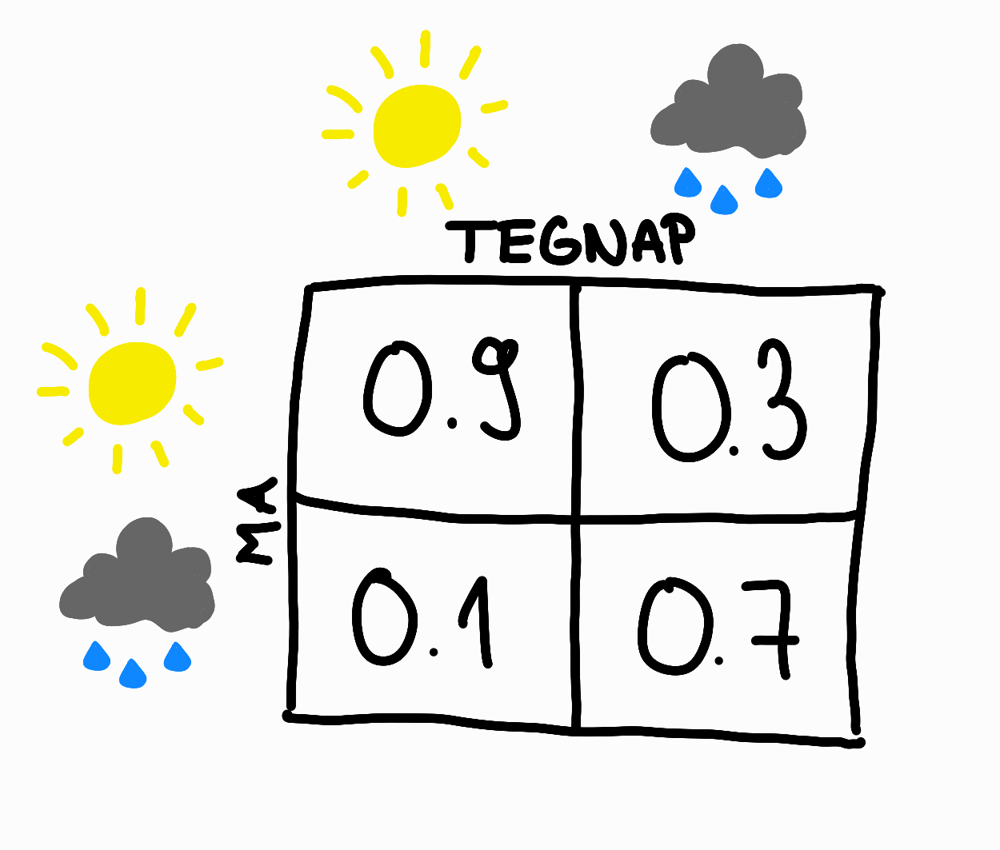
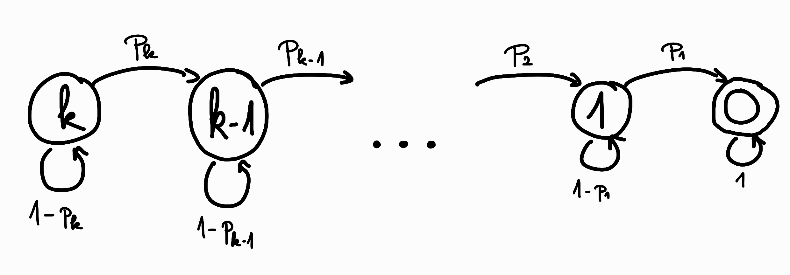

Bárcsak tudnék rendezni (egy valszámos feladat)
Ebben a cikkben szeretnék egy kicsit bővebben a Codeforces 1753C: Wish I Knew How to Sort feladat megoldásairól beszélni.
A feladatban kapunk egy bináris, \(n\) elemű \(a\) tömböt, amit rendezni szeretnénk, de sajnos az algel tanárunk elfelejtette megtanítani nekünk a rendezési algoritmusokat. :) Jobb ötlet híján egy randomizált módszert választunk, melyben egy lépés a következőképpen néz ki:
- Véletlenszerűen (egyenletes eloszlással, egymástól és a korábbi lépéseinktől függetlenül) rámutatunk két pozícióra a tömbben. Legyenek ezek \(i\) és \(j\) indexszel jelölve, ahol \(i < j\).
- Ha rossz sorrendben vannak (\(a_i > a_j\)), megcseréljük őket, egyébként nem csinálunk semmit.
Ezt a lépést addig ismételjük, amíg a tömb rendezett nem lesz.
Kérdés: Mi a várható értéke a végrehajtott lépéseknek?
A feladatban technikai részlet, hogy a megoldást irreducibilis (tovább már nem egyszerűsíthető alakú) törtként kell kiírni, ennek a módszerére a végén térek ki.
A feladatnak legalább kettő, egymástól nagyon különböző megoldása van, mindkettőt nagyon hasznos ismerni valszámos feladatok kezeléséhez.
Megfigyelés
Az első dolog, amit a feladat kapcsán észreveszünk, hogy tudjuk hány darab \(0\)-ás és \(1\)-es található az \(a\) tömbben, ami alapján be tudunk húzni egy elválasztó vonalat, ami majd a végeredményben a \(0\)-ák és \(1\)-esek határa lesz.

Ezután a véletlenül választott \(i < j\) pár elhelyezkedése szerint tulajdonképpen két különböző eset van:
- \(i\) az elválasztó vonal előtt, \(j\) utána van.
- Mindkettő az elválasztó vonal előtt / után van.
Az 1. esetben ha történik csere azzal hasznos munkát végeztünk, hiszen növeltük a \(0\)-ák számát a vonal előtt és az \(1\)-esek számát a vonal után, ezzel közelebb kerültünk a célállapothoz.

A 2. esetben ha történik csere azzal nem végeztünk hasznos munkát, hiszen pusztán határokon belül mozgattunk dolgokat, továbbra is ugyanannyi \(1\)-est kell még a határ bal oldaláról a jobb oldalára mozgatni, miközben a helyükre \(0\)-ákat hozunk.

Tehát elmondható, hogy a feladat szempontjából lényegtelen a \(0\)-ák és \(1\)-esek pontos elhelyezkedése, csak az számít, hogy hány darab található belőlük a határvonal egy-egy oldalán. Hasznos lépés csak akkor történik, amikor az \(i\) a határ előtt és a \(j\) a határ után van, továbbá \(a_i = 1\) és \(a_j = 0\). Minden más esetben a lépés nem változtat az aktuális állapoton.
Első megoldási módszer: Geometriai eloszlás és várható érték linearitása
Aki tanult valószínűségszámítást, az ráismerhet a feladatban egy nevezetes eloszlásra: ez a geometriai eloszlás. Ez mindig akkor kerül elő, amikor "addig ismétlünk valamit, amíg nem sikerül".
Egy kis kitérő: a geometriai eloszlásról (annak, aki még nem ismeri)
Pontosabban:
- Egy véletlen kísérletsorozatot hajtunk végre.
- A kísérleteknek lehetséges kimenetelei közül megkülönböztetünk "sikeres" és nem "sikeres" kimeneteleket.
- A kimenetelek halmazát szoktuk eseménynek hívni, tehát van egy "sikerült" és egy "nem sikerült" eseményünk.
- A "sikeres" esemény valószínűsége ismert, jelölje \(p\), a "nem sikeres" esemény valószínűsége ekkor \(1-p\).
- Az egyes kísérleteket egymástól függetlenül végezzük (azaz a sikeresség valószínűségét nem befolyásolják a korábbi kísérletek eredményei).
- Akkor állunk meg, amikor sikeres eredményt kapunk.
- Definiálunk egy (valószínűségi) változót, ami azt mondja meg, hogy hány lépést végeztünk.
Például ha az \(X\) változó jelöli a lépések számát, akkor feltehetjük azt a kérdést, hogy mennyi a valószínűsége annak, hogy pontosan \(i\) darab lépést végeztünk, azaz \(P(X=i) = ?\).
Ehhez kellett \(i-1\) darab sikertelen, majd \(1\) darab sikeres kísérlet, tehát
\(\(P(X=i) = (1-p)^{i-1}p\)\).
\(i\) lehetséges értékei pedig \(1\) és \(\infty\) között bármilyen lépésszám.
A nevezetes eloszlások ismeretének előnye például, hogy tanuljuk a várható értéküket. Ezt az \(X\) változóhoz \(E(X)\)-el jelöljük az angol "expectation value" kifejezésből. Definíció szerint a várható értéke egy változónak a lehetséges értékeinek a valószínűségükkel súlyozott összege, azaz
(Aztán lehet később arról beszélni, hogy ha mintavételezzük \(X\)-et sokszor, azaz végrehajtjuk a véletlen kísérletsorozatot és felírjuk hány lépést végeztünk, akkor a kapott lépésszámok átlaga egyre jobban megközelíti majd ezt az elméleti várható értéket, de ez már a statisztika világa.)
A geometriai eloszlás várható értéke
A geometriai eloszlás elméleti várható értéke például \(\frac{1}{p}\), ezt a fenti képletbe helyettesítéssel könnyen ki is számolhatjuk:
Ilyen végtelen összegekkel már sokszor találkoztunk és sokféleképpen el lehet bánni velük. Most főleg az az \(i\) szorzó zavar minket, anélkül mértani sor lenne, tehát ettől kellene megszabadulni.
Például kiindulunk az eredeti egyenlőségből és nézzük meg hogy néz ez ki ha elkezdjük kifejteni:
Szorozzuk meg mindkét oldalt \((1-p)\)-vel:
Észrevehetjük, hogy ha kivonjuk egymásból a kettőt, akkor azzal pont az \(i\)-s szorzóktól szabadulunk meg és egy végtelen mértani sor összegét kapjuk:
Azaz
Érdemes erre az eredményre emlékezni.
Vissza a feladathoz
Valamilyen "addig csináljuk amíg nem sikerül" érzésünk van a feladattal kapcsolatban, tehát valamilyen geometriai valószínűségi változó lesz a háttérben, aminek mostmár ismerjük a várható értékét. Próbáljuk meg valahogy így modellezni a feladatot!
Hamar érezhető, hogy egyetlen változó kevés ahhoz, hogy modellezzük a problémát. Gondoljunk csak bele: ekkor a megállási feltétel az lenne, hogy "rendezetté vált" a tömb, ennek kellene egy fix \(p\) valószínűséget meghatározni, ami minden lépésben ráadásul ugyanannyi kellene hogy legyen, hiszen a lépések függetlenek. Ez így nem fog működni.
Helyette megtehetjük azt, hogy a lépéseket szétosztjuk több valószínűségi változó között: legyen a sikeres esemény inkább az, amikor a véletlenül választott \(i\) és \(j\) indexeink a határvonal két oldalára esnek és végrehajtódik egy csere. Ebből az eseményből több is lesz, vagyis több valószínűségi változóra lesz szükségünk. Azonban szerencsére már a kiindulási \(a\) tömbből meg tudjuk mondani, hogy pontosan hány változóra van szükség: annyira, ahány sikeres eseményre szükség van, azaz ahány \(1\)-es van a határvonal bal oldalán: tegyük fel, hogy ez a szám \(k\)!
Ekkor a szükséges lépések számát leírhatjuk \(k\) darab változó összegeként. Legyen \(X_i\) az a változó, ami azon lépések számát írja le, ami ahhoz kell, hogy a bal oldalon \(i\) darab \(1\)-esből \(i-1\) darab \(1\)-est csináljunk (tehát az utolsó lépés volt az egyetlen sikeres és hasznos csere a lépéssorozatban).
Ekkor a lépések számát mostmár az \(X_k + X_{k-1} + \cdots{} + X_1\) változók összege fogja leírni, nekünk pedig ennek az összegnek a várható értékét, azaz \(E(X_k + X_{k-1} + \cdots{} + X_1)\)-et kell megmondanunk.
Itt van szükség arra a nagyon fontos valszám tételre, hogy a várható érték lineáris, azaz
Ami nagyon meglepő ebben az összefüggésben az az, hogy ez még akkor is igaz, ha az egyes változók egymástól nem függetlenek és vannak is olyan vprog feladatok, ahol ezt a tulajdonságot nagyon erősen kihasználjuk. Ez most nem ilyen, itt a változóink függetlenek lesznek, ezért ez talán kevésbé meglepő, de akit érdekel a téma, például itt olvashat ezzel kapcsolatban: https://brilliant.org/wiki/linearity-of-expectation/. Lehet hozok majd erre építő feladatot is önképzőkörre. :)
Ekkor már csak egy \(E(X_i)\)-t kell megmondanunk. Amennyiben \(i\) darab \(1\)-es van a bal oldalon, akkor a \(p_i\) sikeres csere valószínűséget felírhatjuk a kedvező / összes eset darabszám hányadossal a következőképpen:
- Mivel \(n\) elemű a tömb, az összes eset az, hogy hányféleképpen tudok egy rendezett indexpárt kiválasztani az elemek közül, ez \(\binom{n}{2}\).
- A kedvező esetek száma az, hogy hányféleképpen tudok \(1\)-est választani a határvonal bal oldalán és \(0\)-ást a jobb oldalán.
- Amennyiben \(i\) darab \(1\)-es van bal oldalt, tuti hogy ugyanennyi \(0\)-ás van jobb oldalt, ezekből akarunk egy párt választani, azaz \(i\cdot{}i = i^2\) a kedvező esetek száma.
Tehát
Ebből pedig következik, hogy a várható értéke egy változónak
Az összeg várható értéke pedig
Tulajdonképpen ezzel meg is oldottuk a feladatot elméleti szinten, ennek az összegnek a kiszámítását kell leprogramozni.
Mielőtt ezt megtennénk, nézzünk meg először egy teljesen másik megoldást:
Második megoldási módszer: Markov-lánc elérési idők dinamikus programozással
Egy kis kitérő: a Markov-láncokról (annak, aki még nem ismeri)
A Markov-láncok valószínűségszámításban olyan véletlen folyamatokat írnak le, melyek teljesítenek valamilyen fajta memóriamentességi kritériumot. Most ezeknek egy speciális fajtájáról fogok csak beszélni, de az egyszerűség kedvéért csak Markov-láncként fogok hivatkozni rájuk.
Képzeljünk el például egy olyan időjárási modellt, ami a következőket állítja:
- Ha tegnap sütött a nap, akkor ma \(90\%\) valószínűséggel szintén sütni fog a nap.
- Ha tegnap esett az eső, akkor ma \(70\%\) valószínűséggel szintén esni fog az eső.
Ezeket az állításokat egy ábrán szemléltethetjük:

Ez példa egy nagyon egyszerű Markoc-láncra. A láncnak \(2\) lehetséges állapota van, "napos" és "esős". Az \(i.\) napon az \(X_i\) valószínűségi változóval jelöljük, hogy milyen idő volt. A fenti állításainkat lefordíthatjuk a valószínűségszámítás nyelvére, mellyel a lánc állapotátmeneti valószínűségeit adhatjuk meg:
- Annak a valószínűsége, hogy az \(i.\) napon napos az idő, feltéve hogy az előző, \(i-1.\) napon is napos volt: \(P(X_i = napos | X_{i-1} = napos) = 0.9\)
- Annak a valószínűsége, hogy az \(i.\) napon esős az idő, feltéve hogy az előző, \(i-1.\) napon napos volt: \(P(X_i = esős | X_{i-1} = napos) = 0.1\)
- Annak a valószínűsége, hogy az \(i.\) napon napos az idő, feltéve hogy az előző, \(i-1.\) napon esős volt: \(P(X_i = napos | X_{i-1} = esős) = 0.3\)
- Annak a valószínűsége, hogy az \(i.\) napon esős az idő, feltéve hogy az előző, \(i-1.\) napon is esős volt: \(P(X_i = esős | X_{i-1} = esős) = 0.7\)
Ehhez szokott tartozni egy állapotátmeneti (általában \(\Pi\)-vel jelölt) mátrix:

A mátrix oszlopai pedig \(1\)-re összegződnek, hiszen teljes eseményrendszerről van szó: - Egymást páronként kizárják, hiszen a modellünk szerint egy napon csak egyféle időjárás lehet. - Együtt kiadják a biztos eseményt, hiszen a modellünk szerint minden nap van valamilyen időjárás.
A memóriamentességi feltétel (vagy ú.n. Markov-feltétel) itt azt jelenti, hogy az adott napi időjárás csak az azt megelőző nap időjárásától függ, "nem pedig az összes múltbéli nap időjárásától". Ezt az utóbbi idézőjelbe tett szöveget valszámos nyelven úgy kell megfogalmazni, hogy amennyiben a tegnapi időjárás ismert, úgy a mai nap időjárása független minden korábbi nap időjárásától.
Vissza a feladathoz
Feladatunkban felismerhetünk egy hasonló Markov-láncot. Ennek az állapotai legyenek azok, hogy az adott sorozatban éppen hány darab \(1\)-es szerepel a határvonal bal oldalán. Tudjuk, hogy ennek a lehetséges értékei \(0, \dots{}, k\), ahol \(k\) a kiindulási tömbhöz tartozó érték.
Korábban már megadtuk a \(p_i\) valószínűségeket, melyek pont ennek a láncnak az átmeneti valószínűségei lesznek:

A kérdés pedig most az, hogy mennyi a várható lépések száma, amíg a lánc a \(k\) állapotból a \(0\) állapotba ér?
Ez az úgynevezett "hitting time", vagy magyarul elérési idő.
Általánosan levezethető 1, a következők szerint:
Jelöljük \(\nu_{j\leftarrow{}i} = \nu_{j,i}\)-vel azt, hogy ha a Markov-lánc aktuális állapota \(i\), akkor várhatóan hány lépés után lesz a lánc állapota először \(j\).
- Ha \(i = j\), akkor \(\nu_{i,i} = 0\).
- Egyébként \(\nu_{j,i}\)-re pedig kell legalább egy lépés.
- Ez az egy lépés az állapot kimenő éleire írt valószínűségekkel fog másik \(s\) állapotba lépni.
- Ehhez a másik \(s\) állapothoz szintén tartozik valamilyen várható elérési idő a célállapot felé.
- A várható érték linearitása miatt felírható a követkző "önhivatkozó formula":
- \(S\) jelöli a lehetséges állapotok halmazát.
- \(p_{s,i}\) jelöli az állapotáteneti mátrix \(s\). sorának \(i\). oszlopát, vagyis hogy mekkora valószínűséggel lépünk \(i\) állapotból \(s\) állapotba.
Itt a Teljes várható érték tételére támaszkodtunk.
Ez speciálisan a mi Markov-láncunkra egy nagyon szép dinamikus programozós megoldássá alakul át.
- Mivel a \(0\) állapotot akarjuk elérni, ezért csak az a kérdés melyik állapotból jövünk, jelölje ezt \(k\).
- Jelölje \(dp[k]\) azt, hogy mennyi a várható elérési idő a \(k\) állapotból a \(0\)-ba.
- Tudjuk, hogy \(k\neq{}0\) esetén biztosan kell legalább egyet lépni.
- Ez a lépés lehet sikertelen (\(1-p_k\) valószínűséggel), vagy sikeres (\(p_k\) valószínűséggel).
- A fenti általános képletet felírva erre a feladatra:
- Végül ezt átrendezve:
- Továbbá:
Ebből szépen látszik, hogy
Ami pedig pont ugyanaz a képlet, amit a geometriai eloszlásos megoldásból is kihoztunk! :)
Megoldás kiírása irreducibilis tört alakban
Az első megoldás esetén a következő összeget kell kiszámoltatni:
Hozzuk a szummában szereplő törteket közös nevezőre!
Legyen ez a közös nevező \(D = \prod\limits_{i=1}^{k}i^2\)
Ez azért jó nekünk, mert ennek a törtnek a számlálója és a nevezője is biztosan egész számok, ezért külön ki tudjuk számolni őket:
Pythonban pedig a pow függvény 3. paraméterébe beírható egy moduló, így moduló lehet vele a \(Q\) inverzét meghatározni a \frac{P}{Q} számolásához.
Forráskód:
cases = int(input())
for _ in range(cases):
n = int(input())
a = list(map(int, input().split()))
hatar = 0 # Hol van a határ a végeredmény 0-i és 1-esei között.
for i in range(n):
if a[i] == 0:
hatar += 1
k = 0 # Határ előtti 1-esek száma, ennyit kell elmozgatnunk a határ utánra.
for i in range(hatar):
if a[i] == 1:
k += 1
if k==0:
print(0)
continue
D = 1
for i in range(1, k+1):
D *= i*i
S = 0
for i in range(1, k+1):
S += D / (i * i)
P = n*(n-1) * S
Q = 2 * D
mod = 998244353
QInv = pow(Q, -1, mod)
print(int((P * QInv) % mod))
És ez jelen pillanatban time limites lesz. :) (TODO)